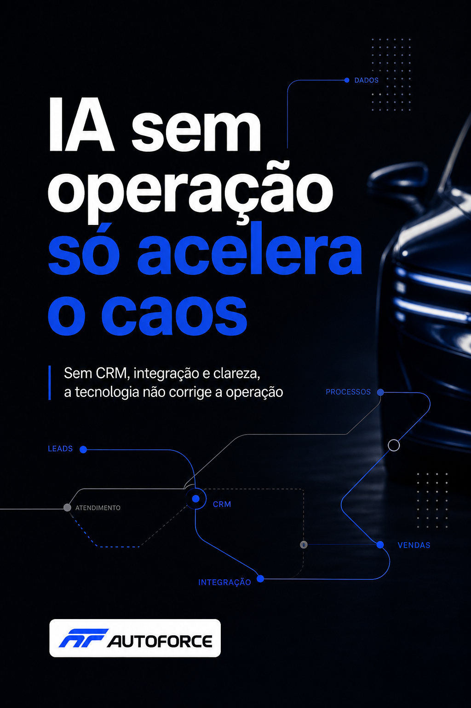
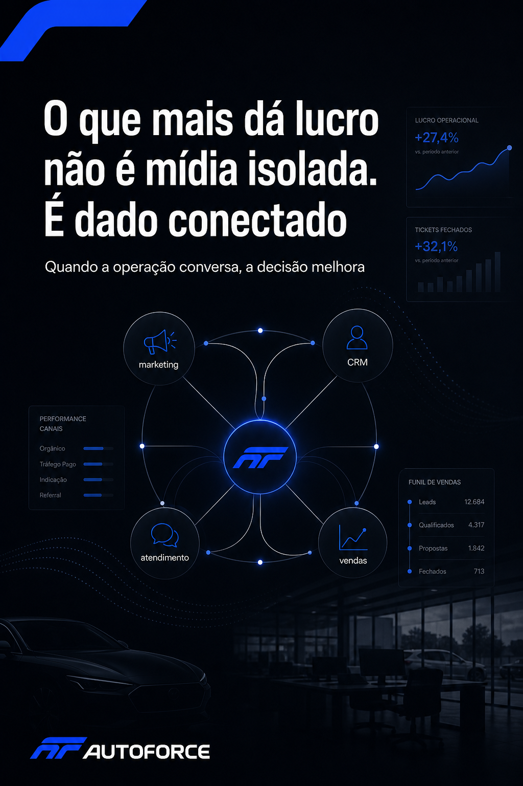
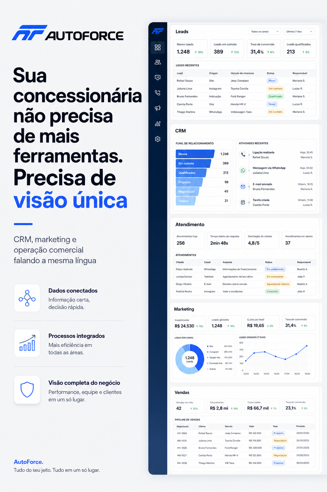
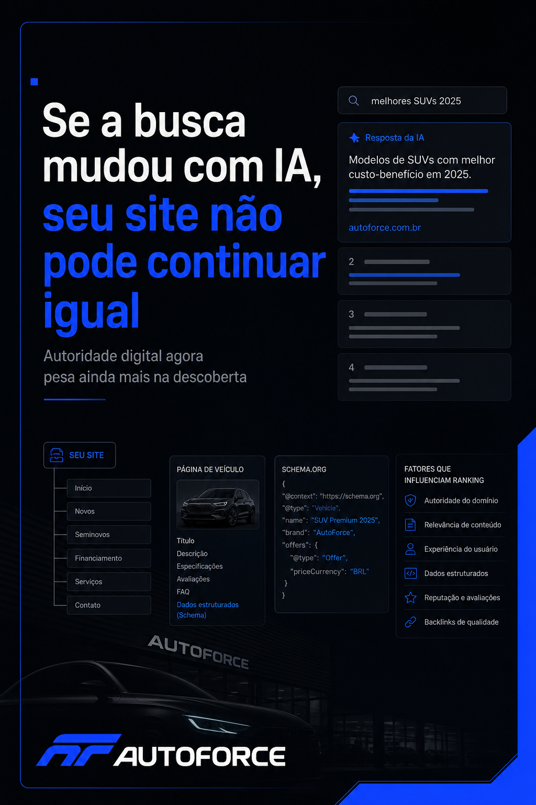
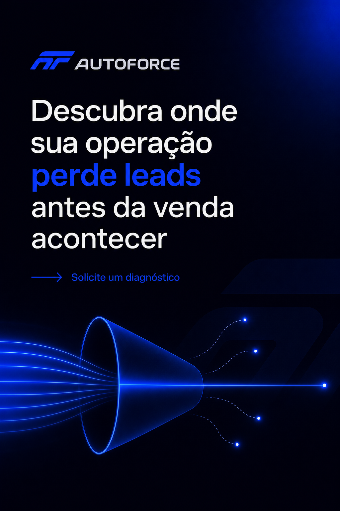

Semana baseada nas tendências de mercado de maio/2026: IA operacional, dado conectado, omnichannel, mudança na busca e eficiência comercial. A curadoria abaixo já separa campanha vs produto para reforçar identidade real da AutoForce.




